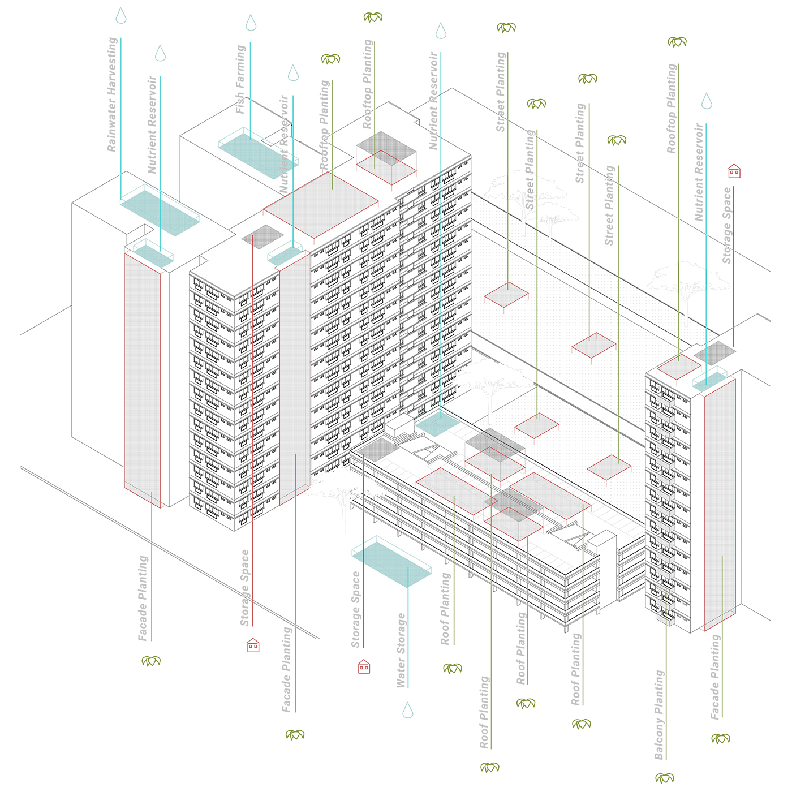

Productive Green Cities
Scalable and Adaptable Urban Injections for Food Production within Communities
Summary
This thesis investigates the possibility of introducing urban agriculture into the existing fabrics of neighbourhood as a solution to combat the issue of food security of Singapore. The main interest is the scaling up of community farms to adopt new technology and to work as a part of a systemic network of farms injected at multi-levels. The thesis explores the context, existing farming technology and grwoth requirements, and the combination of farming and architecture. From the research, a design framework, which is a set of guiding questions, is developed to guide the geometric exploration and design decisions.
Cities and Food
The United Nations projected that 68% of the world population will be living in urban areas by 2050. As of 2017, 1.424 billion hectares of land is being use for crop harvests worldwide (Food And Agriculture Organization, 2017), and this number rises as more cities continue to emerge and grow over time. Agri-cultural production is highly integrated into the global supply chains. Cities that rely heavily on food imports have higher risks of food security (United Nations, 2020). As of 2018, Singapore imports over 90% of the food consumed in the country.
Singapore aims to produce 30% of its nutritional needs by 2030. This means that towards the journey to food security, Singapore has to step up efforts to produce food locally and introduce vegetables, fruit and protein sources within the city. In the recent years, there has been an emergence of many urban farming and agricultural technology start-ups to support this transition.
People and Food
Urban agriculture cannot be developed in silo and must be considered within the context of surrounding activities. Introducing pockets of spaces within the cities that are close to where people live and work can facilitate them to be more directly involved in obtaining their sources of food. Having supporting programs for the community to join in the act of cultivating farms can spark an awareness on food production and ease the community to work among themselves to care for these spaces. Although these community farms may not have the latest technology, the most efficient or productive systems, it can provide platforms for the community to gain knowledge and experience. Additionally, it may plant a seed in their hearts and minds to pursue a more sustainable lifestyle.
This thesis explores not only the reintroduction of food production into the urban fabric, but also into the lifestyle of city dwellers by merging it into the architecture that they occupy. This can be achieved in the form of community farms injected into the urban fabric – be it an existing gap in the city or on the top of an underutilized carpark roof. While the site is arbitrary, the focus is on the spaces that are close to where people live and work to create an intimate relationship between the farms and the people who use them.
Space Requirements
How much space do we need to feed a whole neighbourhood? In Singapore, on average, one family consumes about 6 kg of vegetables per month. And one square metre can produce approximately 3kg of vegetables. Which essentially means that one family only needs about 2sqm per month to produce their nutritional needs. Which means that one block, only needs about an approximate of 150sqm to provide for every household. Looking at the sizes of underutilized spaces in the neighborhood, there are more than enough areas to be utilized for planting that is sufficient to meet this requirement. So it is highly feasible.

Daylighting Requirements
Different types of plants require different conditions in order to grow and thrive. These factors are light, temperature, water, humidity, soil conditions and nutrient medium. Among these factors, daylighting conditions takes precedence as it is the factor that drives photosynthesis and affects the plant development and yield. If you can match the profile of the vegetables along with the amount of sunlight received on every specific place of the neighbourhood, you will know exactly where to grow every specific type of plant, which can create a very efficient system for the growth of crops.

Supplementary Requirements
Most vertical farms use new technologies such as hydroponics, aeroponics and aquaponics. These technologies make use of water as a medium to administer nutrients to the plant. Even though less water is being used as compared to traditional soil-based farming, the quality and the availability of nutrients within the medium becomes important. Some farms make use of fish farm and aquaculture to obtain the nutrients. Others manually add the nutrients that the plants need into the nutrient reservoir that is then circulated through a central plumbing. As different plants have varying nutrient profiles, it has to be noted that only plants with similar nutrient profiles can share a central plumbing system.
For climate-controlled conditions, temperature and humidity of the space can be managed. However, on rooftops and streets, it is not efficient to control the temperatures as the surface area is big. Additionally, the temperature and humidity in Singapore is relatively consistent and favourable for normal crop growth.
Planting and Harvest Cycles
This is a diagram that shows the planting and harvest cycles. Traditionally seeding and germination may be done in a different place from the transplant and growth, requiring the seedling to be transported from the nursery to the main growing areas. After harvest and packing, the vegetables still need to be distributed to the different supermarkets where the consumers will buy them. This is an additional transport mileage taken by the vegetable to reach the consumers.
Putting farming spaces close to where the consumers are can eradicate this mileage, so that all the processes can happen within the same block. Also, with the advancement of technology, customers can pre-order the vegetables of their preference instead of buying them in supermarkets so that there can be a guage of how much crops of each kind to be planted. This can greatly reduce food wastage by catering to the demands of the consumer.
Site
Punggol, Singapore
Coverage vs Yield Analysis
A general daylighting study was conducted. This was done in Ladybug – for 8 hours per day for the first day of each month throughout the year.
An analysis of coverage against yield was carried out to determine the percentage coverage needed to grow an adequate number of crops to feed the households in a block. In each iteration, the coverage favours areas of high sunlight hours than low sunlight hours. It is concluded that a 64% coverage is sufficient to achieve the target yield.

Addition of Rectangular Profiles
The nodes that are closest to the chosen block were identified. These nodes are connected through lines, creating an open pathway for human movement. The planar lines were then projected onto the block so as to create both vertical and horizontal connections across the block. Afterwards, these lines create a potential for new activities to be added onto the site. New nodes are proposed to be added in between the existing nodes to create pathways of continuous activities where the lines flow across the building. The new nodes create bubbles, producing undulations that affect the flow of the lines. This allows new spaces and volumes to be created where the nodes are. Rectangular profiles are created using the lines as a guide, and these profiles have structural properties. Then a daylighting simulation is done more specific to the surfaces that were created by the profiles. This acts as a guide to determine the placement of the different types of crops according to their sunlight requirements.
Facade Additions
The addition of the fins and the planter boxes create a small gap in between the original façade and the new façade. This gives space for a small balcony platform to be added where people can access.
The process of the façade additions firstly starts with the original HDB block with no modifications. Then, supports are added to the structural walls of the building. Subsequently, balcony platforms are added onto the supports. Thereafter, the rectangular fins will be added, encasing the balcony platforms. The planter boxes are added onto the fins and as the plants grow, it will densify the surface of the building.
The planter boxes make use of a soil medium for the growth of crops and is equipped with embedded irrigation pipes within the profiles of the fins for automatic irrigation.
Undulating Landscapes
On the rooftops and ground level, the fins create undulating landscapes that people can walk on, with planters for farming scattered across them.
The process starts out with any existing terrain that is being carved out. The profiles are added across the terrain that has been carved out. Platform and soil layers are added in between the rectangular profiles, and subsequently farming planters in the form of raised beds are added throughout the landscape. Turfing is added onto the soil and as crops grow, it densifies the landscape with greenery.
Similarly, the vegetables grown on the raised planters uses a soil medium for the growth of crops and is equipped with embedded irrigation pipes within the profiles of the fins for automatic irrigation.
Market Hall
Underneath the canopy that is created by the profiles, there is a volume of space that is formed. These spaces on the ground can be used as market hall, accessible to the residents of the block. The market hall uses a temperature controlled vending machine with a crane arm for the purchase and collection of vegetables.
Firstly, a customer uses a console to select the item that he wants to purchase. The vending machine selects a slot that the customer chooses. This is done with consideration of the expiry dates of each item. The crane arm then starts to move on the tracks to the location of the selected slot. It retrieves the vegetable from the slot and moves to the bottom where the customer can retrieve his purchase.
Zero-Mile Cycle
This process creates a zero-mile cycle from planting to consumer. Everything in the cycle is done on site, can be specifically curated by the demands of the residents staying within the block. Firstly, the consumers will pre-order the vegetables that they want every month. This gives a guide to how much crops of each type should be planted to reduce wastage. The seeding and germination can be done in the units of the block that is converted specifically for the use of farming. Seedlings can be transplanted directly onto the farming spaces within the block. Irrigation is embedded within the profiles and can be controlled automatically. Harvesting and packing can be done in cold rooms located on the ground floor beside the market halls. Lastly, collection and distribution can be done by residents as they use the space.
This system ensures enough food production on site to feed the residents of a block, and can be easily replicated across all the surrounding blocks in the neighbourhood.

![]()
![]()